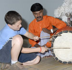
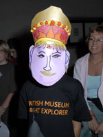

As a Young Friend you can get closer to the British Museum and discover the past and present cultures in lots of different ways. Membership is an ideal way to ensure that you’ll be the first to know what’s going on at the Museum, and if you’re aged 8-15 you can become a Young Friend for just £20 a year! As a Young Friend you’ll enjoy some great benefits:
- A 20 page, full colour, children’s magazine, REMUS, three times a year. ReMus is packed full of fascinating facts about the Museum, as well as the latest details of Young Friends events (including sleepovers!). It also includes the latest news on Museum exhibitions. Regular features include My Favourite Thing (a Young Friend chooses the BM treasure they like best), A Young Friend Interviews (where you could interview a BM curator about their job), and plenty of competitions, puzzles and more.
- In addition there are FOUR SLEEPOVERS a year where you can spend the night exploring the Museum after dark! There’s a great range of things to get involved in, from storytelling and craft activities, trails and quizzes based on the permanent collection or current exhibitions, and the chance to talk to real life curators! It’s a fantastic opportunity to discover the Museum and learn more about the collection- and there’s a chance to bring your friends along too!
- Plus, there’s a wide variety of EVENTS for you and your family to enjoy. You could find yourself behind the scenes at the Museum discovering objects not on display, or learning about past civilizations with a BM curator.
- And you’ll get a great MEMBERSHIP PACK when you join.


